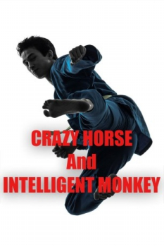

Also known as:癲馬靈猴 (original title)
Country:Hong Kong, 95 minutes
Spoken languages:Cantonese
Genres:Action
Director(s):Tony Lou Chun-Ku, Chen Hsi
Writer(s):
Video Codec:Unknown
Number: 2709


Certification:
Storyline:
Guards of a casino beat Hou Hsiao-Shan because he was caught cheating. Fortunately, Kung Fu expert Ma Ta rescues him.
Cast:
Medium: Original DVD,
Comments: Part of: Flying Fists of Kung Fu - 12 movie set
Loaned: No
Aspect ratio: Unknown